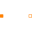
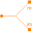

PositiveMagneticPortPositive magnetic port |
Used in Components (7)
|
Modelica.Magnetic.FluxTubes.Basic
Zero magnetic potential |
|
|
Modelica.Magnetic.FluxTubes.Basic
Ideal electro-magnetic energy conversion |
|
|
ElectroMagneticConverterWithLeakageInductance Modelica.Magnetic.FluxTubes.Basic
Electro-magnetic energy conversion with a leakage inductance |
|
|
Modelica.Magnetic.FluxTubes.Basic
Crossing of two branches |
|
|  |
Modelica.Magnetic.FluxTubes.Interfaces
Partial component with two magnetic ports p and n for textual programming |
|  |
Modelica.Magnetic.FundamentalWave.Interfaces
Positive port interface to FluxTubes |
|
FundamentalWavePermabilitySensor Modelica.Magnetic.QuasiStatic.FluxTubes.Sensors.Transient
Sensor of fundamental wave permeability |